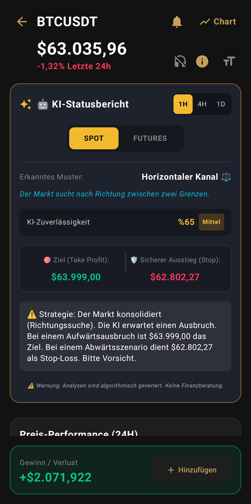

Spot- & Futures-KI-Radar aktiv
Krypto nicht nur verfolgen,
sondern verstehen.
Nutzen Sie Premium-Finanztools völlig kostenlos. Ein KI-gestützter Krypto-Tracker der nächsten Generation, Live-Börsencharts und ein Portfolio-Management-Terminal, das speziell für Investoren entwickelt wurde.

